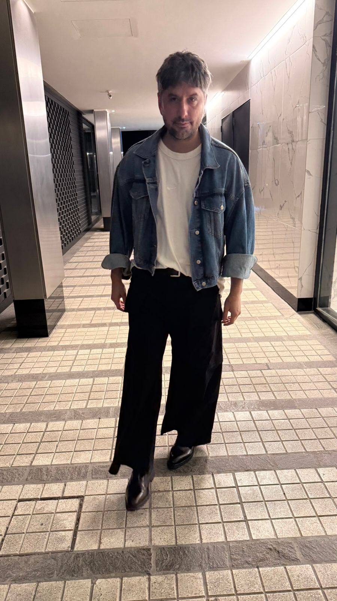

Quienes somos

Pedro
Pepe / Don Pedrito / Solcito / CerditoNacido en Buenos Aires, alma de Bell Ville. CEO de dia, cocinero de noche. Hace el mejor pure del mundo (segun el). Le pregunta a Andi si esta lindo 47 veces por dia. Se inspira en Jacob Elordi pero come hamburguesas con sopa Quick. Impulsivo, cariñoso, intenso.
"Toy lindo?"
♥

Andi
Amor / Bombon / Mi esposa / MamiLa mas estructurada de los dos. Trabaja hasta la 1:30am y a las 7 ya esta de pie. Fashionista natural que viste a Pedro sin que el se de cuenta. Inteligencia emocional altisima. Le frustra no ser buena en ingles porque le gusta ser buena en todo. Sensible, fuerte, genuina.
"Re team, nos amo"